ARIA P a usilypon lo sc a vo come sp a zio di conoscenz a e p a rtecip a zione
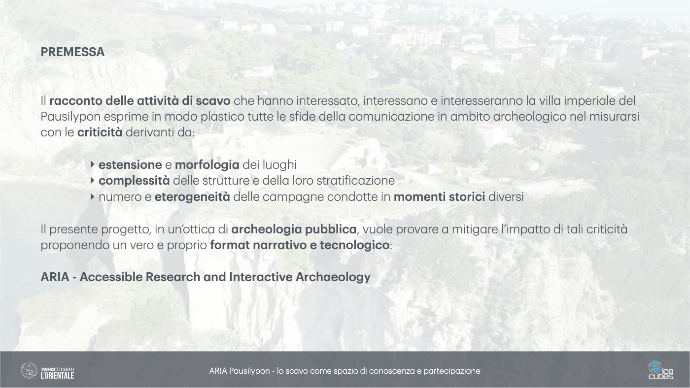
PREMESSA Il r a cconto delle a ttivit à di sc a vo che h a nno interess a to, interess a no e interesser a nno l a vill a imperi a le del P a usilypon esprime in modo pl a stico tutte le s f ide dell a comunic a zione in a mbito a rcheologico nel misur a rsi con le criticit à deriv a nti d a : ‣ estensione e morfologi a dei luoghi ‣ complessit à delle strutture e dell a loro str a ti f ic a zione ‣ numero e eterogeneit à delle c a mp a gne condotte in momenti storici diversi Il presente progetto, in un’ottic a di a rcheologi a pubblic a , vuole prov a re a mitig a re l’imp a tto di t a li criticit à proponendo un vero e proprio form a t n a rr a tivo e tecnologico : ARIA - Accessible Rese a rch a nd Inter a ctive Arch a eology ARIA P a usilypon - lo sc a vo come sp a zio di conoscenz a e p a rtecip a zione
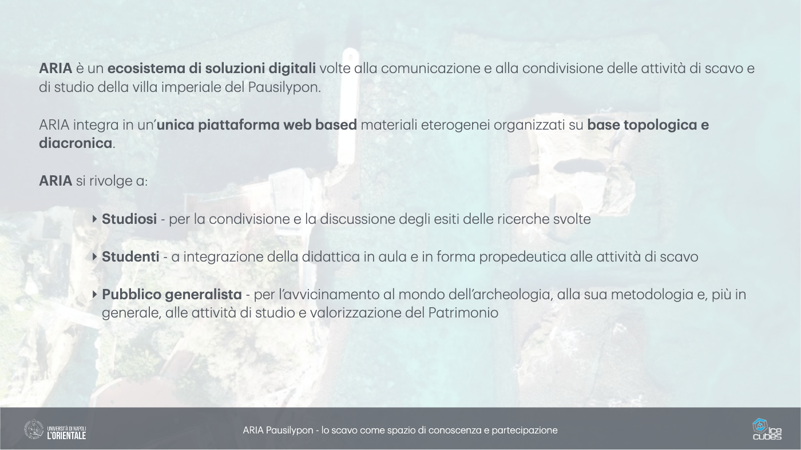
ARIA è un ecosistem a di soluzioni digit a li volte a ll a comunic a zione e a ll a condivisione delle a ttivit à di sc a vo e di studio dell a vill a imperi a le del P a usilypon. ARIA integr a in un’ unic a pi a tt a form a web b a sed m a teri a li eterogenei org a nizz a ti su b a se topologic a e di a cronic a . ARIA si rivolge a : ‣ Studiosi - per l a condivisione e l a discussione degli esiti delle ricerche svolte ‣ Studenti - a integr a zione dell a did a ttic a in a ul a e in form a propedeutic a a lle a ttivit à di sc a vo ‣ Pubblico gener a list a - per l’ a vvicin a mento a l mondo dell’ a rcheologi a , a ll a su a metodologi a e, più in gener a le, a lle a ttivit à di studio e v a lorizz a zione del P a trimonio ARIA P a usilypon - lo sc a vo come sp a zio di conoscenz a e p a rtecip a zione
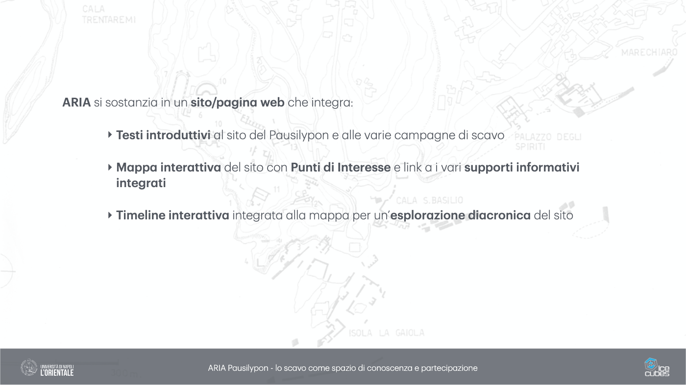
ARIA si sost a nzi a in un sito/p a gin a web che integr a : ‣ Testi introduttivi a l sito del P a usilypon e a lle v a rie c a mp a gne di sc a vo ‣ M a pp a inter a ttiv a del sito con Punti di Interesse e link a i v a ri supporti inform a tivi integr a ti ‣ Timeline inter a ttiv a integr a t a a ll a m a pp a per un’ esplor a zione di a cronic a del sito ARIA P a usilypon - lo sc a vo come sp a zio di conoscenz a e p a rtecip a zione
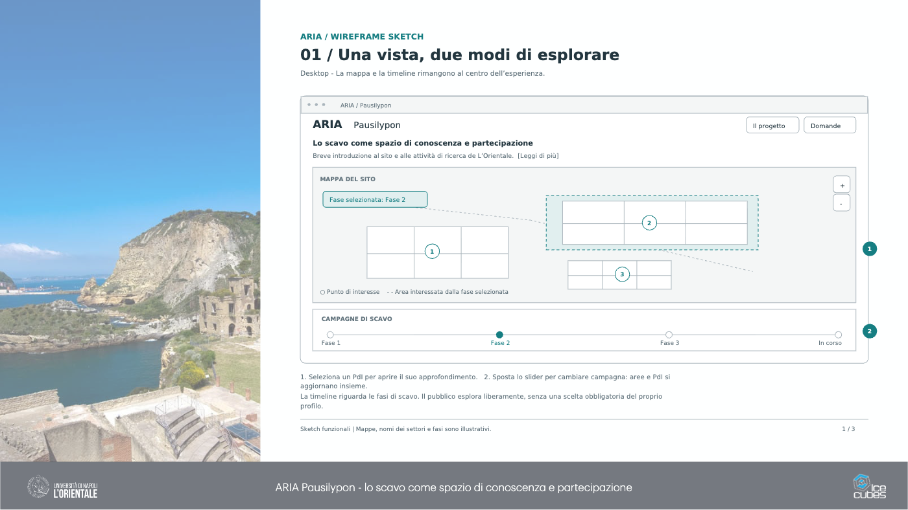
ARIA P a usilypon - lo sc a vo come sp a zio di conoscenz a e p a rtecip a zione ARIA / WIREFRAME SKETCH 01 / Una vista, due modi di esplorare Desktop - La mappa e la timeline rimangono al centro dell’esperienza. Sketch funzionali | Mappe, nomi dei settori e fasi sono illustrativi. 1 / 3 ARIA / Pausilypon ARIA Pausilypon Il progetto Domande Lo scavo come spazio di conoscenza e partecipazione Breve introduzione al sito e alle attività di ricerca de L’Orientale. [Leggi di più] 1 2 3 MAPPA DEL SITO ○ Punto di interesse - - Area interessata dalla fase selezionata + - Fase selezionata: Fase 2 CAMPAGNE DI SCAVO Fase 1 Fase 2 Fase 3 In corso 1 2 1. Seleziona un PdI per aprire il suo approfondimento. 2. Sposta lo slider per cambiare campagna: aree e PdI si aggiornano insieme. La timeline riguarda le fasi di scavo. Il pubblico esplora liberamente, senza una scelta obbligatoria del proprio profilo.
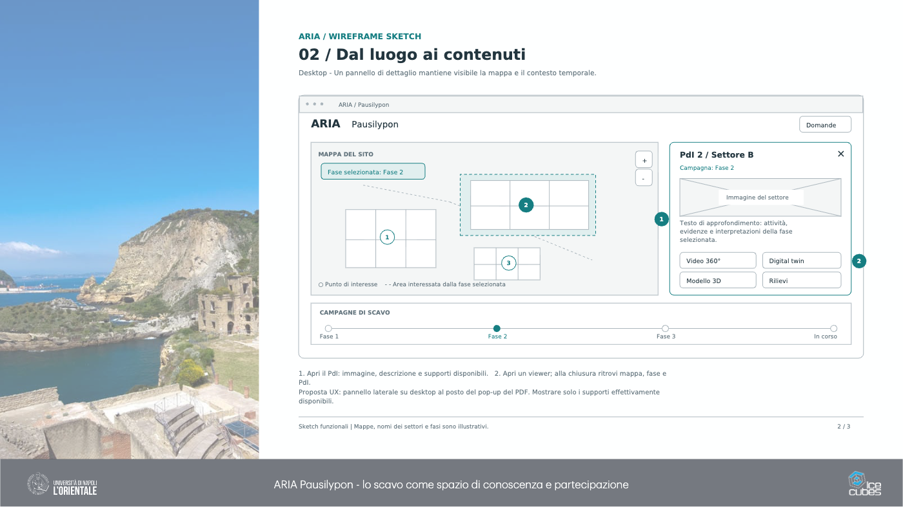
ARIA P a usilypon - lo sc a vo come sp a zio di conoscenz a e p a rtecip a zione ARIA / WIREFRAME SKETCH 02 / Dal luogo ai contenuti Desktop - Un pannello di dettaglio mantiene visibile la mappa e il contesto temporale. Sketch funzionali | Mappe, nomi dei settori e fasi sono illustrativi. 2 / 3 ARIA / Pausilypon ARIA Pausilypon Domande 1 2 3 MAPPA DEL SITO ○ Punto di interesse - - Area interessata dalla fase selezionata + - Fase selezionata: Fase 2 PdI 2 / Settore B × Campagna: Fase 2 Immagine del settore Testo di approfondimento: attività, evidenze e interpretazioni della fase selezionata. Video 360° Digital twin Modello 3D Rilievi CAMPAGNE DI SCAVO Fase 1 Fase 2 Fase 3 In corso 1 2 1. Apri il PdI: immagine, descrizione e supporti disponibili. 2. Apri un viewer; alla chiusura ritrovi mappa, fase e PdI. Proposta UX: pannello laterale su desktop al posto del pop-up del PDF. Mostrare solo i supporti effettivamente disponibili.
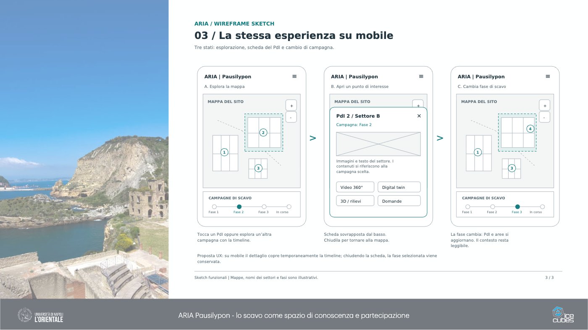
ARIA P a usilypon - lo sc a vo come sp a zio di conoscenz a e p a rtecip a zione ARIA / WIREFRAME SKETCH 03 / La stessa esperienza su mobile Tre stati: esplorazione, scheda del PdI e cambio di campagna. Sketch funzionali | Mappe, nomi dei settori e fasi sono illustrativi. 3 / 3 ARIA | Pausilypon ≡ A. Esplora la mappa 1 2 3 MAPPA DEL SITO + - CAMPAGNE DI SCAVO Fase 1 Fase 2 Fase 3 In corso ARIA | Pausilypon ≡ B. Apri un punto di interesse 1 2 3 MAPPA DEL SITO + - PdI 2 / Settore B × Campagna: Fase 2 Immagini e testo del settore. I contenuti si riferiscono alla campagna scelta. Video 360° Digital twin 3D / rilievi Domande ARIA | Pausilypon ≡ C. Cambia fase di scavo 1 3 4 MAPPA DEL SITO + - CAMPAGNE DI SCAVO Fase 1 Fase 2 Fase 3 In corso > > Tocca un PdI oppure esplora un’altra campagna con la timeline. Scheda sovrapposta dal basso. Chiudila per tornare alla mappa. La fase cambia: PdI e aree si aggiornano. Il contesto resta leggibile. Proposta UX: su mobile il dettaglio copre temporaneamente la timeline; chiudendo la scheda, la fase selezionata viene conservata.
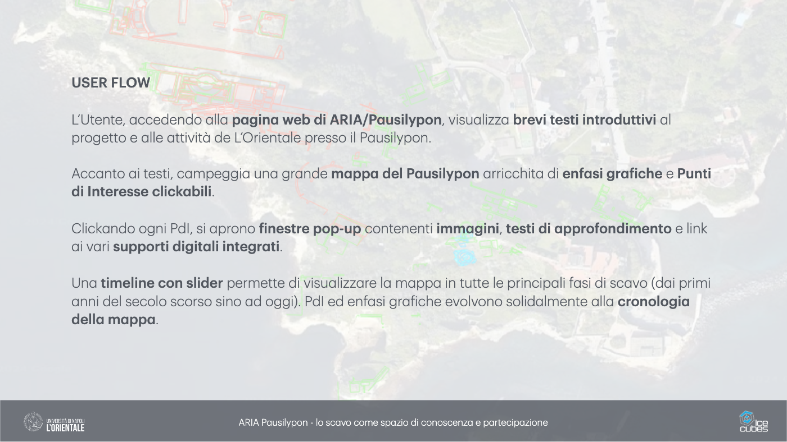
USER FLOW L’Utente, a ccedendo a ll a p a gin a web di ARIA/P a usilypon , visu a lizz a brevi testi introduttivi a l progetto e a lle a ttivit à de L’Orient a le presso il P a usilypon. Acc a nto a i testi, c a mpeggi a un a gr a nde m a pp a del P a usilypon a rricchit a di enf a si gr a f iche e Punti di Interesse click a bili . Click a ndo ogni PdI, si a prono f inestre pop-up contenenti imm a gini , testi di a pprofondimento e link a i v a ri supporti digit a li integr a ti . Un a timeline con slider permette di visu a lizz a re l a m a pp a in tutte le princip a li f a si di sc a vo (d a i primi a nni del secolo scorso sino a d oggi). PdI ed enf a si gr a f iche evolvono solid a lmente a ll a cronologi a dell a m a pp a . ARIA P a usilypon - lo sc a vo come sp a zio di conoscenz a e p a rtecip a zione
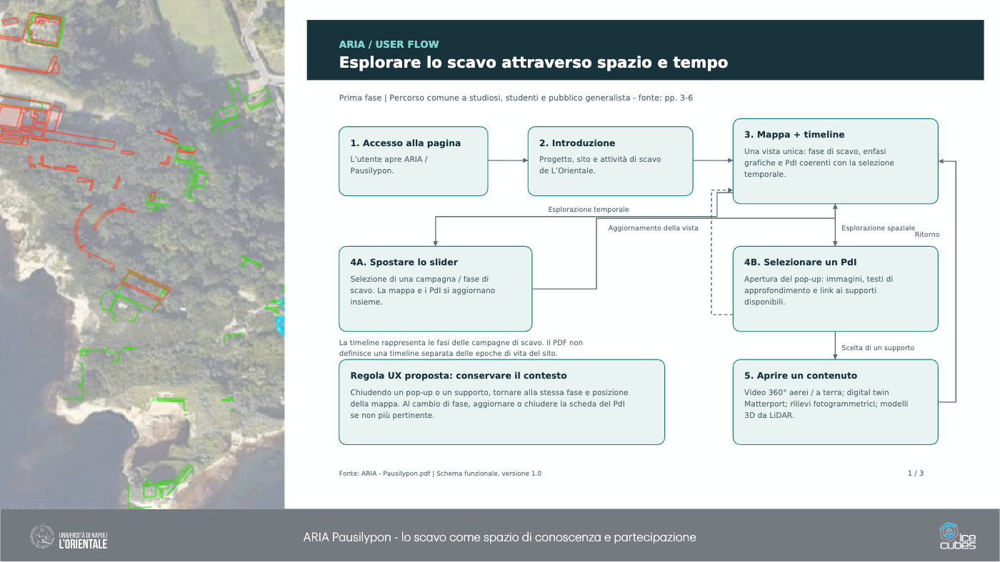
ARIA P a usilypon - lo sc a vo come sp a zio di conoscenz a e p a rtecip a zione ARIA / USER FLOW Esplorare lo scavo attraverso spazio e tempo Prima fase | Percorso comune a studiosi, studenti e pubblico generalista - fonte: pp. 3-6 Fonte: ARIA - Pausilypon.pdf | Schema funzionale, versione 1.0 1 / 3 1. Accesso alla pagina L’utente apre ARIA / Pausilypon. 2. Introduzione Progetto, sito e attività di scavo de L’Orientale. 3. Mappa + timeline Una vista unica: fase di scavo, enfasi grafiche e PdI coerenti con la selezione temporale. 4A. Spostare lo slider Selezione di una campagna / fase di scavo. La mappa e i PdI si aggiornano insieme. Esplorazione temporale Aggiornamento della vista 4B. Selezionare un PdI Apertura del pop-up: immagini, testi di approfondimento e link ai supporti disponibili. Esplorazione spaziale 5. Aprire un contenuto Video 360° aerei / a terra; digital twin Matterport; rilievi fotogrammetrici; modelli 3D da LiDAR. Scelta di un supporto Ritorno Regola UX proposta: conservare il contesto Chiudendo un pop-up o un supporto, tornare alla stessa fase e posizione della mappa. Al cambio di fase, aggiornare o chiudere la scheda del PdI se non più pertinente. La timeline rappresenta le fasi delle campagne di scavo. Il PDF non definisce una timeline separata delle epoche di vita del sito.
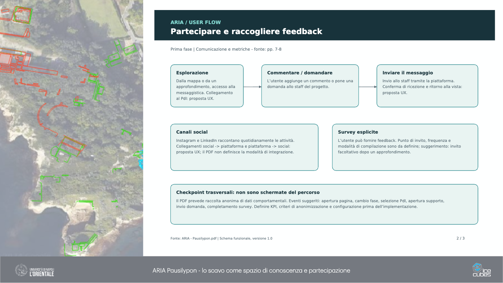
ARIA P a usilypon - lo sc a vo come sp a zio di conoscenz a e p a rtecip a zione ARIA / USER FLOW Partecipare e raccogliere feedback Prima fase | Comunicazione e metriche - fonte: pp. 7-8 Fonte: ARIA - Pausilypon.pdf | Schema funzionale, versione 1.0 2 / 3 Esplorazione Dalla mappa o da un approfondimento, accesso alla messaggistica. Collegamento al PdI: proposta UX. Commentare / domandare L’utente aggiunge un commento o pone una domanda allo staff del progetto. Inviare il messaggio Invio allo staff tramite la piattaforma. Conferma di ricezione e ritorno alla vista: proposta UX. Canali social Instagram e LinkedIn raccontano quotidianamente le attività. Collegamenti social -> piattaforma e piattaforma -> social: proposta UX; il PDF non definisce la modalità di integrazione. Survey esplicite L’utente può fornire feedback. Punto di invito, frequenza e modalità di compilazione sono da definire; suggerimento: invito facoltativo dopo un approfondimento. Checkpoint trasversali: non sono schermate del percorso Il PDF prevede raccolta anonima di dati comportamentali. Eventi suggeriti: apertura pagina, cambio fase, selezione PdI, apertura supporto, invio domanda, completamento survey. Definire KPI, criteri di anonimizzazione e configurazione prima dell’implementazione.
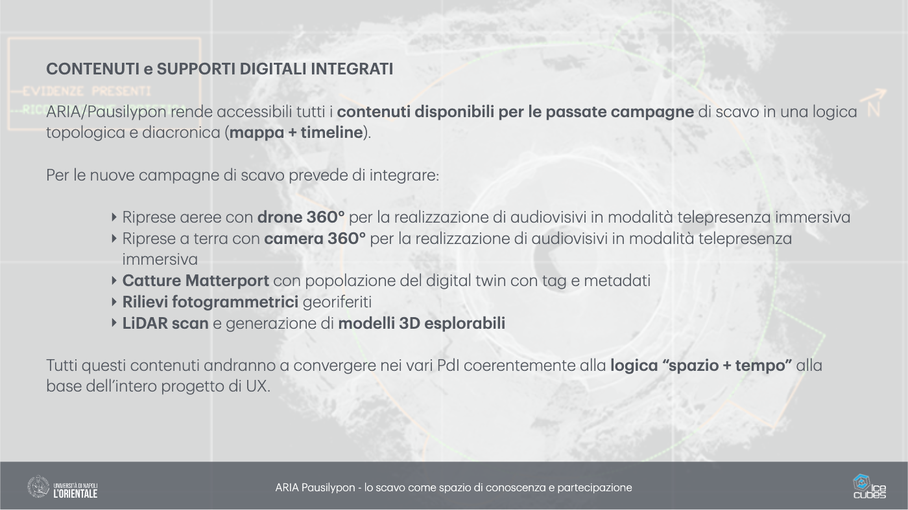
CONTENUTI e SUPPORTI DIGITALI INTEGRATI ARIA/P a usilypon rende a ccessibili tutti i contenuti disponibili per le p a ss a te c a mp a gne di sc a vo in un a logic a topologic a e di a cronic a ( m a pp a + timeline ). Per le nuove c a mp a gne di sc a vo prevede di integr a re: ‣ Riprese a eree con drone 360° per l a re a lizz a zione di a udiovisivi in mod a lit à telepresenz a immersiv a ‣ Riprese a terr a con c a mer a 360° per l a re a lizz a zione di a udiovisivi in mod a lit à telepresenz a immersiv a ‣ C a tture M a tterport con popol a zione del digit a l twin con t a g e met a d a ti ‣ Rilievi fotogr a mmetrici georiferiti ‣ LiDAR sc a n e gener a zione di modelli 3D esplor a bili Tutti questi contenuti a ndr a nno a convergere nei v a ri PdI coerentemente a ll a logic a “sp a zio + tempo” a ll a b a se dell’intero progetto di UX. ARIA P a usilypon - lo sc a vo come sp a zio di conoscenz a e p a rtecip a zione
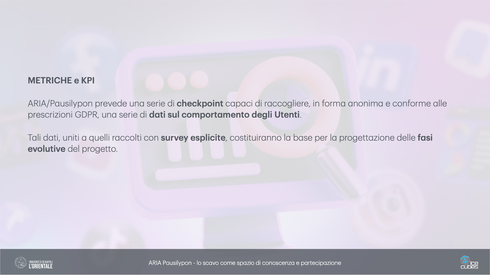
METRICHE e KPI ARIA/P a usilypon prevede un a serie di checkpoint c a p a ci di r a ccogliere, in form a a nonim a e conforme a lle prescrizioni GDPR, un a serie di d a ti sul comport a mento degli Utenti . T a li d a ti, uniti a quelli r a ccolti con survey esplicite , costituir a nno l a b a se per l a progett a zione delle f a si evolutive del progetto. ARIA P a usilypon - lo sc a vo come sp a zio di conoscenz a e p a rtecip a zione
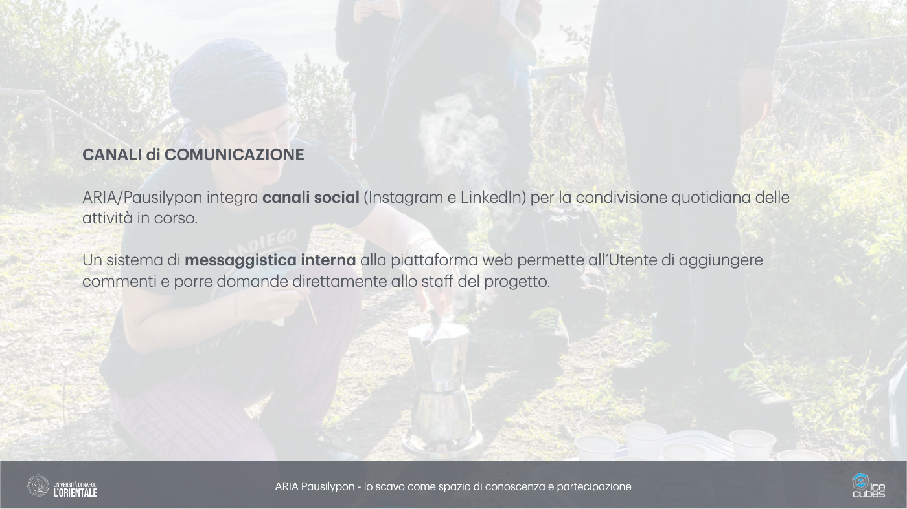
CANALI di COMUNICAZIONE ARIA/P a usilypon integr a c a n a li soci a l (Inst a gr a m e LinkedIn) per l a condivisione quotidi a n a delle a ttivit à in corso. Un sistem a di mess a ggistic a intern a a ll a pi a tt a form a web permette a ll’Utente di a ggiungere commenti e porre dom a nde dirett a mente a llo st a ff del progetto. ARIA P a usilypon - lo sc a vo come sp a zio di conoscenz a e p a rtecip a zione
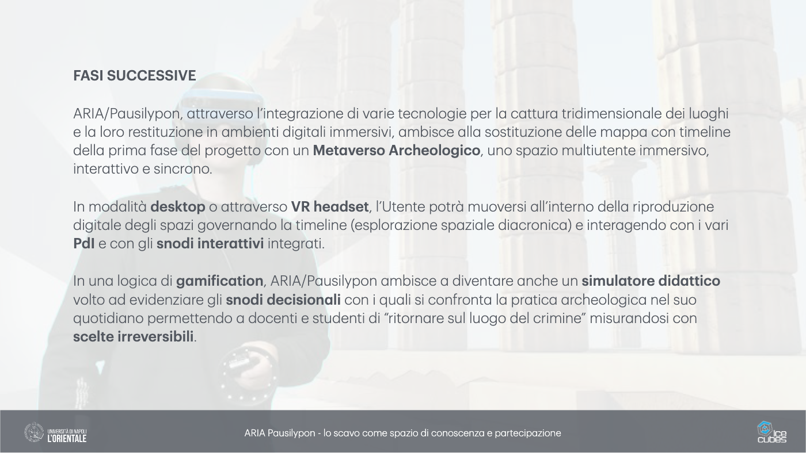
FASI SUCCESSIVE ARIA/P a usilypon, a ttr a verso l’integr a zione di v a rie tecnologie per l a c a ttur a tridimension a le dei luoghi e l a loro restituzione in a mbienti digit a li immersivi, a mbisce a ll a sostituzione delle m a pp a con timeline dell a prim a f a se del progetto con un Met a verso Archeologico , uno sp a zio multiutente immersivo, inter a ttivo e sincrono. In mod a lit à desktop o a ttr a verso VR he a dset , l’Utente potr à muoversi a ll’interno dell a riproduzione digit a le degli sp a zi govern a ndo l a timeline (esplor a zione sp a zi a le di a cronic a ) e inter a gendo con i v a ri PdI e con gli snodi inter a ttivi integr a ti. In un a logic a di g a mi f ic a tion , ARIA/P a usilypon a mbisce a divent a re a nche un simul a tore did a ttico volto a d evidenzi a re gli snodi decision a li con i qu a li si confront a l a pr a tic a a rcheologic a nel suo quotidi a no permettendo a docenti e studenti di “ritorn a re sul luogo del crimine” misur a ndosi con scelte irreversibili . ARIA P a usilypon - lo sc a vo come sp a zio di conoscenz a e p a rtecip a zione
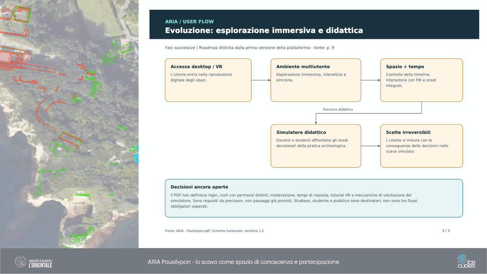
ARIA P a usilypon - lo sc a vo come sp a zio di conoscenz a e p a rtecip a zione ARIA / USER FLOW Evoluzione: esplorazione immersiva e didattica Fasi successive | Roadmap distinta dalla prima versione della piattaforma - fonte: p. 9 Fonte: ARIA - Pausilypon.pdf | Schema funzionale, versione 1.0 3 / 3 Accesso desktop / VR L’utente entra nella riproduzione digitale degli spazi. Ambiente multiutente Esplorazione immersiva, interattiva e sincrona. Spazio + tempo Controllo della timeline, interazione con PdI e snodi integrati. Simulatore didattico Docenti e studenti affrontano gli snodi decisionali della pratica archeologica. Scelte irreversibili L’utente si misura con le conseguenze delle decisioni nello scavo simulato. Percorso didattico Decisioni ancora aperte Il PDF non definisce login, ruoli con permessi distinti, moderazione, tempi di risposta, tutorial VR o meccaniche di valutazione del simulatore. Sono requisiti da precisare, non passaggi già previsti. Studioso, studente e pubblico sono destinatari; non sono tre flussi obbligatori separati.